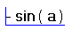

To type negation, as opposed to a subtraction
operator, which has two arguments, the blue insertion line must be in front
of the value to be negated, for example,

You may have to press the [Insert] key to switch the insertion line from
right to left.
Negation for arrays negates each element in the array.